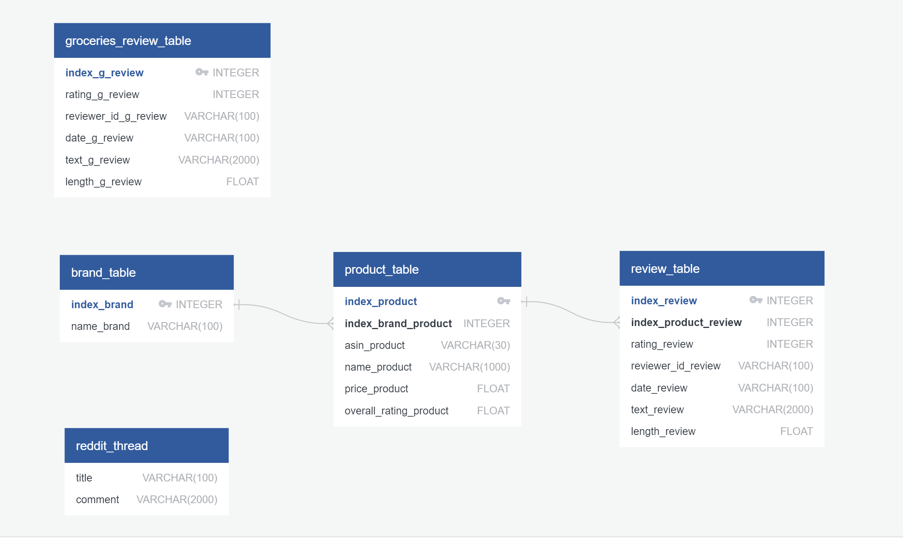

Data Source
Amazon product data was taken with permission from Dr.Jianmo Ni's website from the Computer Science Department at UCSD. The dataset includes product reviews and metadata from Amazon, of approximately 5 million reviews spanning May 1996 - July 2014.
The products reviewed in this dataset were all types of groceries.
A second source of the data was of reviews scraped from Amazon website. Fake meat products from 5 brands were scraped. The brands are: Beyond Meat, Boca, Tofurky, Quorn and Gardein.
Finally, reviews of fake meat on Reddit were scraped.
Data Content

The goal was to use a dataset that had all of the columns mentioned in the image above and most importantly, the review text as well as the product and price information in order to focus only on fake meat reviews. Since the dataset from UCSD had groceries reviews but no product and brand information, merging the Amazon groceries with the metadata would resolve this issue.
The general groceries dataset from UCSD had more than 5 million reviews. After cleaning the data there were more than 1 million reviews. The metadata had a similar number initially but after choosing only the fake meat reviews, the metadata set had only 116 reviews. Merging the UCSD Amazon data with the metadata left with only 12 rows. Many different variations of merge, join, concatinate, with an inner, outer, left joins were not successful. The only common column in these datasets was the asin which is the Amazon’s product number. Further investigation revealed that the asin in one of the datasets was made of letters and digits and the other one was digits only so this explained why the merging of these datasets did not work.
Scraping data from Amazon website provided all the necessary data that was missing in the previous dataset. Multiple url’s of fake meat products were scraped. Scraped data was used for visualizations.
The reddit reviews did not have star ratings. The reddit reviews about fake meat were scraped to show that our machine learning model could predict if a review is positive or negative therefore expanding the number of reviews that store owners could use to help them in understanding how people feel about different fake meat products and ultimately, help them decide which brands and products they may want to sell in their stores.
Data Cleaning
Columns that were not relevant for the project goal were dropped:(columns dropped were: verified, reviewer name, summary of the review text, unix review time,(vote, image and style - had little data in them)).
Review length column was added to find out if there was a connection between the length of a review and its sentiment. This column showed the number of words in each review.
Duplicate rows were dropped, that is rows that all data was identical were dropped. Only the 1 and 5 starred reviews were included so the difference between the positive and negative was more obvious. 5 star reviews was trimmed from more than 3 million reviews to 600,000 to match the number of reviews we had for 1 star to feed a balanced set into the machine learning model.
Database Tables
Sqlite and sqlalchemy were used to create the database. This was a local database that is suitable for the development stage of a project. We interacted with the database using python, and table plus. Below is an image of the ERD we created, showing the tables in the database. The first one is the data from UCSD Amazon general groceries. (the metadata is not included because we ended up not using it.) The three in the middle are from the Amazon scraped data. The first one is of the brands. The second is the products. Since each brand has several products, the connection is one to many. Since each product has multiple reviews the connection between the product and the review table was also one to many. Lastly the reddit thread table with Reddit reviews.
